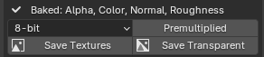

Saving Textures¶
Applies to: Parting Placer V2.0.0 · Blender 4.4 · 5.2
Once you have baked, this row appears at the bottom of the Bake box. It writes your maps out of Blender as PNG files.

Baked: Line¶
Lists the maps you have baked, for example Baked: Color, Normal, Roughness.
Bit Depth¶
The unlabelled dropdown: 8-bit or 16-bit. It applies to Save Transparent. The default is 8-bit, which is right for almost everything.
16-bit gives the colour more levels to work with, but not the transparency. A 16-bit file has the same 256 steps of transparency as an 8-bit one. It is also about three times the size. Use it only when you see banding in the colour of a soft edge.
Premultiplied¶
Multiplies the colour by the transparency before writing Save Transparent's file. It is off by default. Leave it off unless your game engine asks for premultiplied alpha.
Off keeps colour in the fully transparent areas, so nothing bleeds through when the engine shrinks the texture. The README calls it Premultiplied Alpha.
Save Textures¶
Pick a folder, and every baked map is saved there as its own PNG. The file names include the head, the style, the map and its size. For example: head_Style 1_Partings_Color_1024.png.
The status bar confirms how many it saved.
Save Transparent¶
Writes one PNG with your parting colour and its transparency together. It is ready to layer over a scalp texture in a game engine. It uses this head's UV layout, so the file only fits this head.
It needs both Color and Alpha baked. Until then it is greyed out and the row says "Tick Alpha and re-bake for transparent". The README calls it Save Textures (Transparent).
The status bar message says where the colour came from. If it says re-bake to use the premultiplied map, your last bake came from an older version. Bake once more, then save again.
The file is named after the head, for example head_Partings_Transparent.png. The status bar confirms the bit depth and alpha type it used.
If You're Stuck
- Save Transparent is greyed out? See Save Transparent Is Unavailable.
- The transparent file has a pale edge? See The Transparent Export Has A Pale Or Skin-Coloured Edge.
- 16-bit looks the same? See 16-bit Export Looks The Same And The File Is Much Bigger.
Recommended next: Orphan Stamps Warning